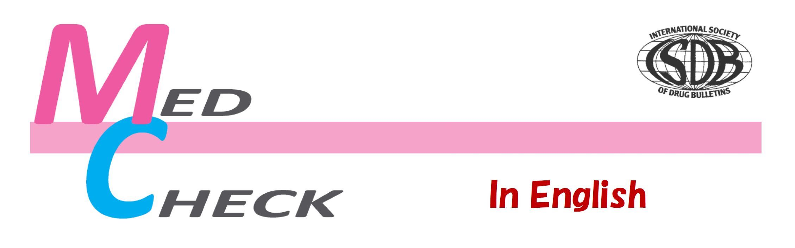

MED CHECK
bimonthly
launched on Jan 2015 in Japan, integrating two ISDB member bulletins:
Med Check
Rigorously Independent and reliable Information for informed
decision-making on treatment and healthcare, published by
Non-Profit Organization Japan Institute of Pharmacovigilance
(NOPJIP). Med Check is financed by its subscribers.
No advertising, No shareholders, No sponsors.
Here is the 14th issue of “Med Check” in English
We will publish at least three issues a year
| Apr. 2019,Vol.5, No.14 | Contents | PDF(6.9MB) |
| Apr. 2019,Vol.5, No.13 | Contents | PDF(6.1MB) |
| Dec. 2018,Vol.4, No.12 | Contents | PDF(8.5MB) |
| Aug. 2018,Vol.4, No.11 | Contents | PDF(4.2MB) |
| Apr. 2018,Vol.4, No.10 | Contents | PDF(2.9MB) |
| Dec. 2017,Vol.3, No.9 | Contents | PDF(4.8MB) |
| Aug. 2017,Vol.3, No.8 | Contents | PDF(7.8MB) |
| Apr. 2017,Vol.3, No.7 | Contents | PDF(3.3MB) |
| Dec. 2016,Vol.2, No.6 | Contents | PDF(9.9MB) |
| Aug. 2016,Vol.2, No.5 | Contents | PDF(6.2MB) |
| Supplementary material: | PDF(6.3MB) |
| Apr. 2016,Vol.2, No.4 | Contents | PDF(16MB) |
| Supplement: Cochrane comments | PDF(1.3MB) |
| Dec. 2015,Vol.1, No.3 | Contents | PDF(7MB) |
| Aug. 2015,Vol.1, No.2 | Contents | PDF(5MB) |
| Apr. 2015,Vol.1, No.1 | Contents | PDF(3MB) |
Web MedCheck in English
former"Kusuri-no-Check in English"： No1(2003) ～No11(2008) |
CONTENTS August 2019, Vol.5, No.14 PDF(6.9MB)
Editorial:
Does the Japanese Regulator ignore science? P18
Critical Review
Critical Assessment of Dementia Guidelines: p19
Don't try to cure but communicate appropriately
Critical Assessment of Nocturia Guidelines: p25
Non-pharmacological treatment is the best
Critical Assessment of Guidelines for Low-dose Pills: p28
Thromboembolism may occur in 1 out of 37 high risk women
CONTENTS April 2019, Vol.5, No.13 PDF(6.1MB)
Editorial:
Accelerated approval, ignoring harm, is a crime P2
New products
New Direct-acting Antiviral for Hepatitis C (Epclusa) p3-6
Advance in hepatitis C with prior treatment failure or decompensated cirrhosis
Adverse Reactions
Hemorrhage caused by an Anti-influenza Agent, Xofluza p7-9
Serious toxicity necessitating suspension of its use
Critical Review
Critical Assessment of Diabetes Guidelines: p10-15
CONTENTS December 2018, Vol.4, No.12 PDF(8.5MB)
Editorial:
Dying Cochrane: Could it be resuscitated? P30
New products
Herpes zoster subunit vaccine Shingrix: Judgment Reserved p31
Baloxavir (Xofluza®) for Influenza: No Value p37
No difference from Tamiflu in efficacy, and suppresses immunity
Adverse Reactions
New evidence of severe abnormal behaviors/psychiatric reactions to oseltamivir(Tamiflu) p40
Critical Review
Cochrane review on HPV vaccine should be revised: p41
News p50
Cochrane Out of Control: Expulsion of the Prominent Member
France has delisted anti-dementia agents
CONTENTS August 2018, Vol.4, No.11 PDF(4.2MB)
Editorial:
What we learned from epidemiological studies on drug-induced pneumonia p16
New products
A new cholesterol lowering agent: lomitapide is highly toxic p17
Review
Japanese Guideline for Hypertension is for disease mongering P20
Medical checkups create “patients” and shorten their lifespan by “treatment”
Adverse Reactions
Pneumonia induced by benzodiazepines P24
Evidence shows causal relations
CONTENTS April 2018, Vol.4, No.10 PDF(2.9MB)
Editorial:
Is the “Right-to-try” a “Right of Patient” ? p2
Review
Who benefits from the guidelines? P3
Guidelines for influenza treatment in Japan is misleading p6
Do general health checks prolong lifespan? p11
CONTENTS December 2017, Vol.3, No.9 PDF(4.8MB)
Editorial:
WHO downgraded oseltamivir (Tamiflu) p28
New products
Hypnotic (sleeping pill), suvorexant (brand name Belsomra) p29
A substance that causes narcolepsy and cataplexy
Teriparatide More harm than benefit P34
Review
Insomnia, Optimal Sleep Duration and Harm of Sleeping pills P36
Pneumonia caused by proton pump inhibitors (PPI)
(1) meta-analysis P40
(2) Critical appraisal of a study P42
CONTENTS August 2017, Vol.3, No.8 PDF(7.8MB)
Editorial:
Is the intervention really necessary? p13
The importance of the epidemiologic evidence
Review
Screening does not reduce cervical cancer deaths p14
The best and only protective measure is to have adequate nutrition and sleep
Pneumococcal and Hib vaccines for children p20
Harms may outweigh benefits: not recommended
CONTENTS April 2017, Vol.3, No.7 PDF(3.3MB)
Editorial:
Time to wake up from a nightmare
"cholesterol=devil" hypothesis
New products
Anti PD-1 antibody: pembrolizumab
Effective only for non-small cell lung cancer of specific type
New Cholesterol Lowering Agents (PCSK9 Inhibitors)
Infection and neurological diseases increase.
Topics
Top 1 most read for 5 months: paper on cholesterol
RCTs of cholesterol lowering agents of different classes were cancelled in succession
CONTENTS December 2016, Vol.2, No.6 PDF(9.9MB)
Editorial:
Don’t be misled by new “mab” drugs p28
New products
Nivolumab (brand name: Opdivo) p29-34
Benefit and harm on survival offset each other: strict restriction on use is needed
GLP-1 Agonists (liraglutide) p35-42
No evidence of improving prognosis in patients with diabetes: Not recommended
CONTENTS Aug. 2016, Vol.2, No.5 PDF(6.2MB)
Editorial:
Epidemiologists and biostatisticians, be honest!
Adverse Reactions
Symptoms after HPV vaccine:
Typical "frailty exclusion bias" in Nagoya City study
Critical comments from theoretical viewpoints
Supplementary material:
Frailty exclusion bias：A theoretical basis and practical influences on Nagoya City Study:PDF(6.3MB)
Adverse Reactions
Pioglitazone (brand name: Actos) and bladder cancer: A new type "time-related bias"
CONTENTS Apr. 2016, Vol.2, No.4 PDF(16MB)
Editorial:
“Talk about harm, not risk”
New Products
Memantine (brand name: Memary): No value for dementia
An NMDA antagonist, memantine may induce neurotoxicity
Too many withdrawn cases due to adverse reactions
Dutasteride (Zagallo®) for Androgenetic alopecia:
Good in theory, too harmful in practice: cancer, sexual dysfunctions, suicide
Review
Cochrane team criticises the ECDC experts' draft advice
on oseltamivir use:
Supplementary material:
Critical comments to ECDC by Cochrane team PDF(1.3MB)
CONTENTS Dec. 2015,Vol.1, No.3 PDF(7MB)
Editorial:
“Surrogate endpoint” qualify “real advance”?
New Products
Anti-HCV agent LDV/SOF combination (brand name: Harvoni)
8 week treatment may be better to reduce harm and costs with same efficacy
Febuxostat(brand name: Febric): Inferior to allopurinol
Too frequent cardiovascular events, gouty attacks, serious allergy
Review
Is Alteplase Beneficial for Treating Ischemic Stroke?
No proven efficacy if it is given 1.5 hours after onset
CONTENTS Aug. 2015,Vol.1, No.2 PDF(5MB)
Editorial:
We want good medicines!
New Products
Dabigatran: potentially harmful: See also Supplementary materials: PDF (4.6MB)
The safe use is compromised without monitoring and an antagonist
Optimal dose may be lower: Subgroup analysis indicates
Information for the patient (Dabigatran)
Lubiprostone:
Too harmful and expensive for general use as a laxative
Plain language summary
Adverse Reactions
Propofol-induced death in children: at a Univ. Hospital
Plain language summary
Plain Language summary
Dabigatran (information for the patient)
Lubiprostone
Propofol
CONTENTS Apr. 2015,Vol.1, No.1 PDF(3MB)
Editorial:
An independent drug bulletin for medical practice
New Products
# SGLT-2 inhibitors: Unacceptable products--can we call these “medicines”?
Were the harms warned after marketing known before approval?
# Methadone (Limited use): Useful only in opioid rotation with special precautions
Why is it useful in opioid rotation? What precautions are needed?
Reviews
# H.pylori eradication may shorten life span:
Gastric cancer decreases by H.pylori eradication. Why life span may shorten?
What diseases and why other diseases increase? What are the underlying mechanisms?
# Harm of HPV vaccine: Latest information and examination of epidemiological studies
“I have never seen such serious diseases in teen age girls”, many specialists say.
Do RCTs prove the safety of HPV vaccines?
Do epidemiologic studies prove the safety of HPV vaccines?
Is the prevalence same as the incidence? What is the “healthy vaccinee effect”
Plain Language summary
# SGLT-2 inhibitors: inaccurate to call these “medicines”
What is diabetes? What is insulin?
Target of treatment is NOT to normalize the blood glucose level. Then what is the target?
# "Pylori" bacteria removal may shorten life
# Harm of HPV vaccine: epidemiologic studies do not prove safety